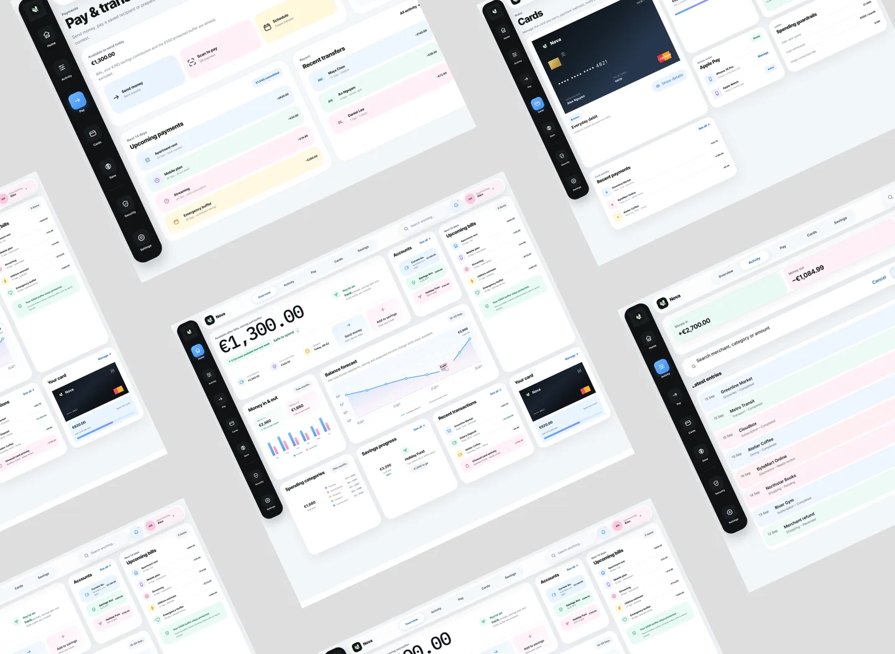

Fintech / Product design
Nova
What can I actually spend?
Making protected money, daily decisions and recovery clear in a personal finance app.
Product Designer
I design clear interfaces and thoughtful systems for fintech, B2B and commerce.
Explore selected work
Fintech / Product design
What can I actually spend?
Making protected money, daily decisions and recovery clear in a personal finance app.

B2B / Systems thinking
Complex investigations. One clear workspace.
Evidence, permissions and consequential actions in a stable investigation flow.
Working prototype. Practitioner validation remains open.

Commerce / UI craft
From inspiration to a confident purchase.
Materials, variants and the chosen configuration stay connected through checkout.
Responsive prototype. User testing and conversion impact unmeasured.
Independent concepts and experiments across product design, visual craft and systems.
Culture
An exploratory digital museum built around art, mood and discovery.
Culture
A cinematic cultural journey through Huế.
Commerce
Furniture discovery with configuration continuity through checkout.
Commerce
Editorial storytelling with a clear path to purchase.
Commerce
A marketplace connecting product discovery and shopping decisions.
Fintech
Personal finance built around what is safe to spend.
Fintech
A multi-currency workspace for treasury decisions.
Fintech
A focused workspace for complex fraud investigations.
B2B
Enterprise access, permissions and governance in one workspace.
B2B
Commercial real estate discovery and leasing journeys.
B2B
A responsive B2B brand and component system.
Education
Helping parents compare programs, campuses and admissions.
Mobility
Product storytelling for an electric-mobility brand.
Systems
A repeatable workflow for design, implementation and QA.
I’m Nghĩa. I turn complex product problems into interfaces people can understand and use with confidence.
My practice connects flows, interaction states and visual systems with working prototypes. I care about how a product behaves as much as how it looks.
View resumeUI/UX Designer
May - Sep 2026
UI/UX Designer
Dec 2025 - Apr 2026
Intern UI/UX Designer
Sep - Dec 2025
From understanding the problem to testing the details. AI supports exploration and implementation; I own the design decisions.
Frame the problem. Map the flow. Build the system. Test, learn and refine.
UIUX Factory makes that practice repeatable, with explicit assumptions and checks on the rendered product.
Writing
What faster execution asks of design judgment.
Have a product challenge in mind?